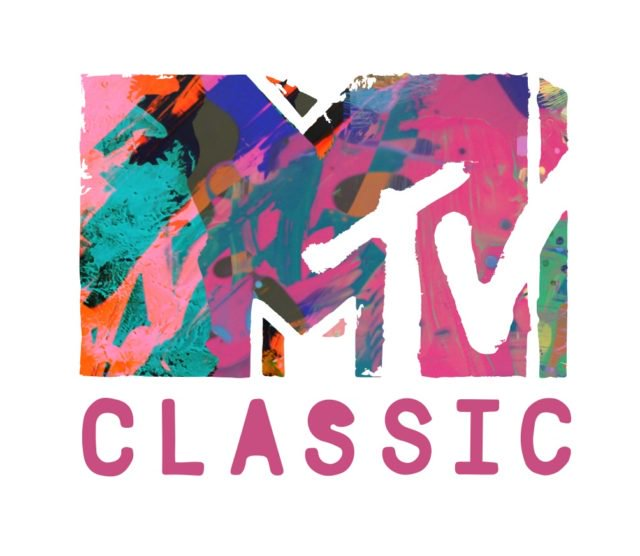

It Was Acceptable In The 80's!
The NEW WAVE Decade
The ’80s was the decade of crazy patterns, vibrant colors, and feathered hairstyles. The time had such a distinctive style that the mere mention of “the look of the ’80s” conjures up specific visuals. The look was so influential that it continues to inspire design today.
